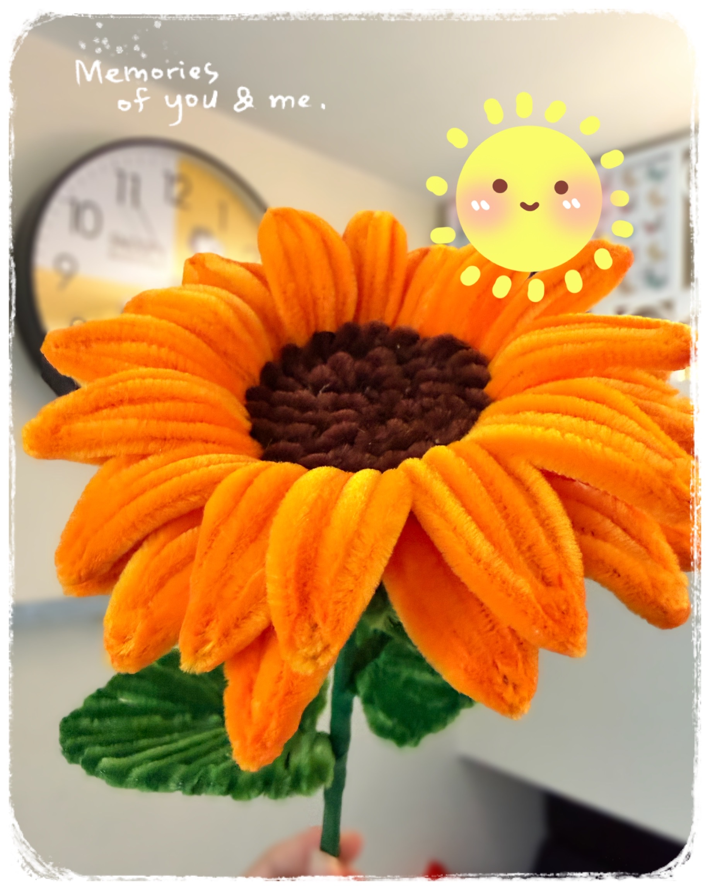

永遠面向陽光
向日葵 × 永生花
向日葵有一種固執——它永遠知道太陽在哪裡。
從破土的那天起，它就把整張臉朝向光，不管風怎麼吹，不管旁邊的花怎麼長，它只是轉過去，靜靜地，跟著那道光。
鮮黃的花瓣，像光本身長出了形狀；深褐的花心，密密實實，藏著幾千顆等待發芽的心事。
但花季有盡頭。向日葵也有低頭的一天。
我們想把它抬頭的樣子留下來。
於是一片一片，用雙手重新塑造那個朝光的姿態——以橙金色絨布，鋪出花瓣蓬張的弧度；以深咖啡絨線，一圈一圈編出花心的厚實與溫度；以翠綠絨莖，撐起整朵花挺拔的身軀。
這朵永生花，不再需要追逐太陽。
它就是光的本身，停在這裡，不枯，不謝，不低頭。
無論放在窗邊、書桌，還是你最常低頭的地方——抬起眼，它都在，提醒你，那個面向陽光的人，是你自己。
送給每一個曾經低頭，但還是會再抬起來的你。